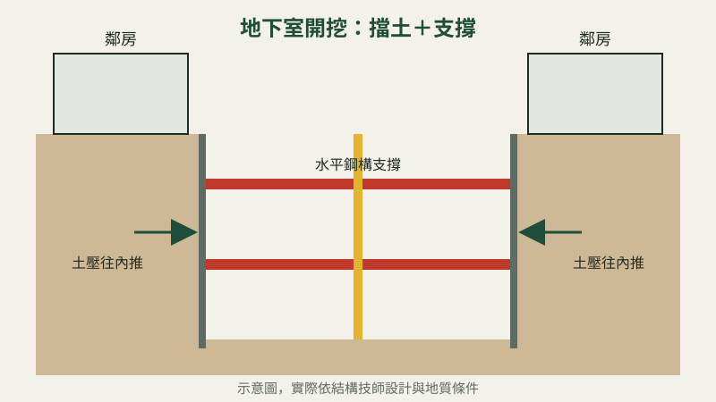
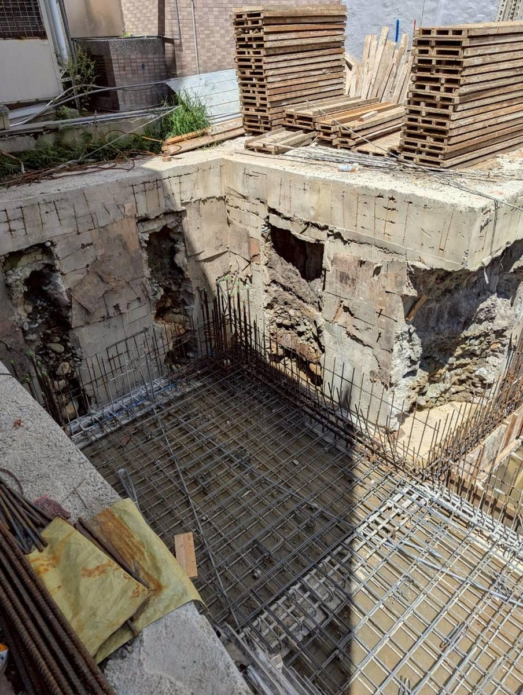

蓋有地下室的房子，為什麼開挖時要架一堆鋼梁？

如果新房子要做地下室，開挖時會看到坑裡架滿紅色、黃色的鋼梁。很多屋主會問：這是做什麼的？為什麼要花這筆錢？
一句話回答：那是「擋土支撐」，用來撐住四周的土，讓隔壁的房子和馬路不會因為開挖而下陷。
一、為什麼要支撐？
- 地面往下挖，四周的土會往坑裡推。如果沒有撐住，輕則路面下陷，重則鄰房傾斜、龜裂。
- 台中市區的老透天常常緊貼著鄰居，基地小、旁邊就是別人的房子，支撐更不能省。
二、怎麼做？
- 先在基地四周打設擋土設施，再一邊往下挖、一邊架設水平的鋼構支撐，把四周的土撐住。
- 挖到預定深度後，做好基礎和地下室結構，結構穩固後才逐步拆除支撐。
三、施工期間會注意什麼？
- 觀察鄰房與路面有沒有變化，必要時設置監測。
- 注意地下水，避免積水影響開挖安全。
我們遇過的實例
南區一個 3 戶合建的案子，重建成地下 1 層、地上 7 層的電梯大樓。地下室開挖時就是用這樣的鋼構支撐，一區一區往下挖。


實際做法依結構技師的設計與現場地質而定。